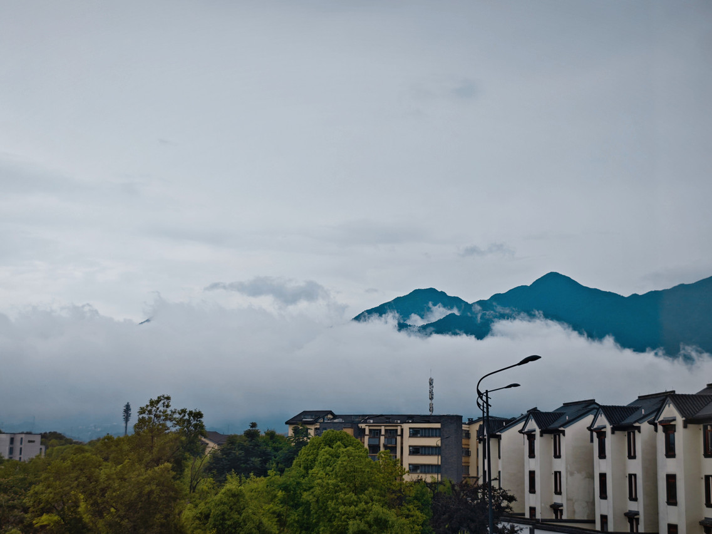

桐庐县城新亚朵 · 4.9 分 · 外卖/商场方便

| 项目 | 详情 |
|---|---|
| 地址 | 浙江省杭州市桐庐县环城南街道环城南路 605 号 |
| 距上海 | 上海自驾约 280km |
| 自驾时间 | 约 3.5 小时（G60 沪昆/杭新景高速） |
| 开业/装修 | 2023 年开业 |
| 评分 | 4.9 /5（3010+ 评） |
| 参考价 | 平日 400–700；国庆预估 700–1100 |
| 儿童政策 | 17 岁及以下使用现有床铺免费；1.2m 以下早餐免费 |
| 推荐房型 | 几木亲子房 / 双床房（6 岁免费同住） |
妈妈舒服 住的安心
这是桐庐县城最新的亚朵之一，评分 4.9 分，硬件和服务都在线。作为全程不挪窝的基地，它胜在'新、干净、外卖方便、去高速口近'；代价是到真正的玩水乐园需要 35–45 分钟车程。